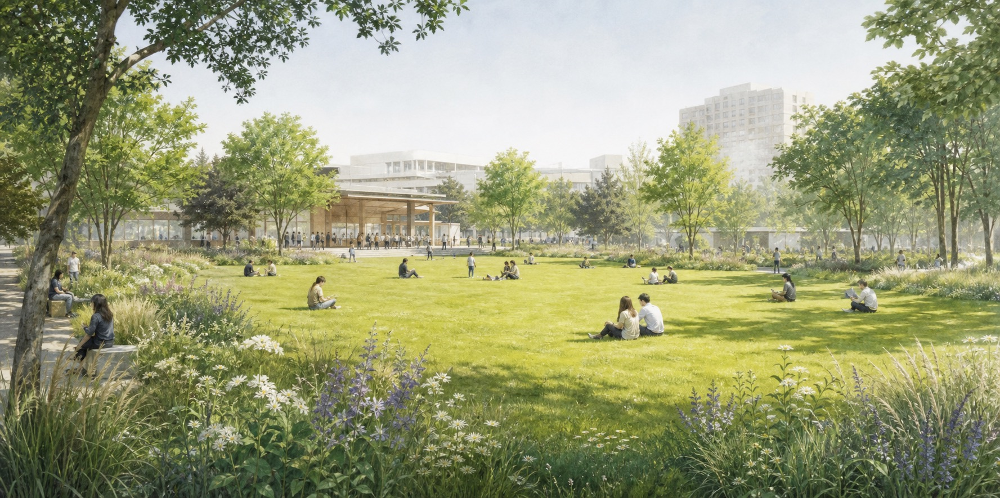
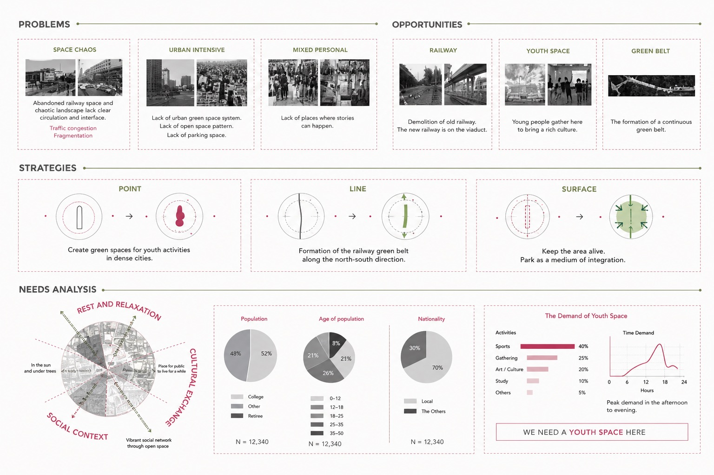
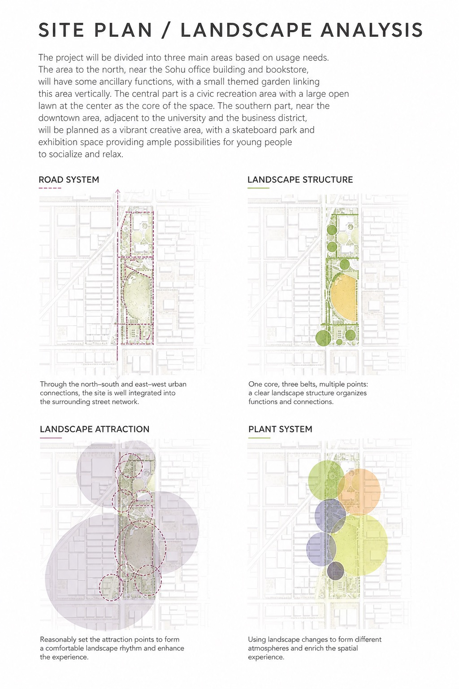
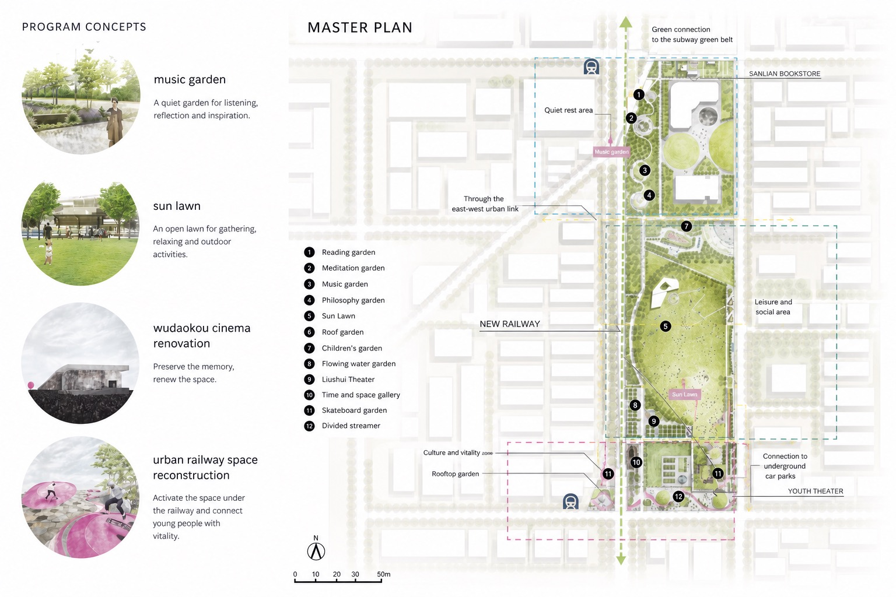
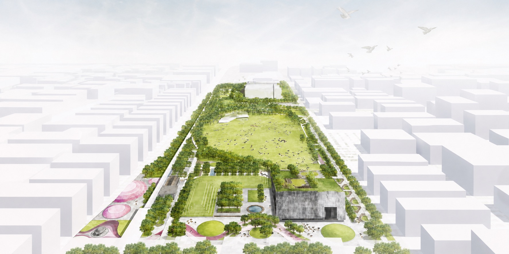

Railway Green Belt
Reusing residual railway-edge space as a linear ecological connector through the district.
Ecological urban renewal / Green corridor

Green Lung is an ecological urban renewal project in Haidian District, Beijing, developed around an underused railway corridor and a dense university-and-technology district lacking a coherent open-space system.
The proposal transforms fragmented residual land into a north-south green corridor, using a large Sun Lawn as the open landscape core. Quiet garden rooms, youth activity spaces, cultural renovation, railway-edge planting, and social lawns are organized to reconnect everyday recreation, ecological structure, and urban regeneration.
Reusing residual railway-edge space as a linear ecological connector through the district.
Creating a large open landscape core for rest, informal gathering, and social life.
Placing reading, meditation, music, and philosophy gardens near cultural buildings.
Transforming under-railway and reserved-building areas into active cultural and recreational spaces.



